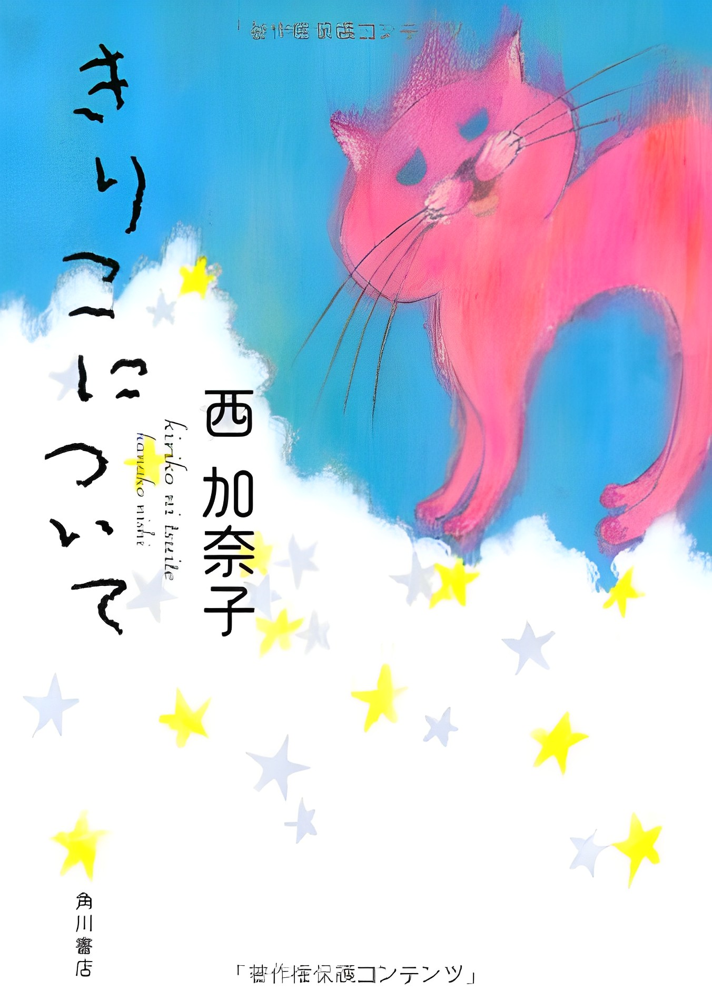

きりこについて
両親の愛情を浴びて育ったきりこだったけれど、5年生の時、好きな男の子に「ぶす」と言われ、強いショックを受ける。 悩んで引きこもる日々。 やがて、きりこはラムセス2世に励まされ、外に出る決心をする。 きりこが見つけた世の中でいちばん大切なこととは？

両親の愛情を浴びて育ったきりこだったけれど、5年生の時、好きな男の子に「ぶす」と言われ、強いショックを受ける。 悩んで引きこもる日々。 やがて、きりこはラムセス2世に励まされ、外に出る決心をする。 きりこが見つけた世の中でいちばん大切なこととは？